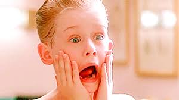
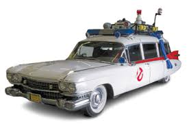
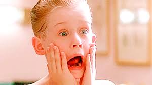
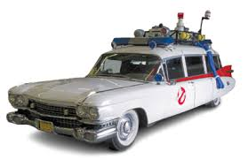
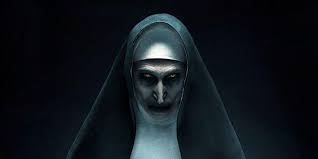

Halloween is super fun! Getting free candy from strangers and being out late getting high on sugar and dressed as a pretty princes.
Halloween in Germany has steadily grown in popularity since the 1990s, blending modern American-style festivities with the country’s deep-rooted folklore and haunted history. While it was once a little-known event, today many Germans embrace Halloween with enthusiasm, decorating their homes and shops with cobwebs, skeletons, candles, and carved pumpkins. Children in some neighborhoods go door to door shouting “Süßes oder Saures!” (meaning “trick or treat”), while adults enjoy themed costume parties (Halloween-Partys), haunted castle tours, and spooky film nights. The famous Ludwigsburg Pumpkin Festival near Stuttgart, one of the largest of its kind in the world, has become a seasonal highlight, featuring towering pumpkin sculptures and autumn-inspired food.
Germany’s fascination with the supernatural runs much deeper than these modern festivities. The country’s landscape is filled with misty forests, crumbling ruins, and castles that carry centuries of ghost stories. Burg Frankenstein near Darmstadt is one of the most famous haunted sites and even inspired Mary Shelley’s Frankenstein; it now hosts one of Germany’s biggest Halloween festivals. Other chilling legends come from places like Heidelberg Castle, said to be haunted by the “White Lady,” and Wolfsegg Castle in Bavaria, where the ghost of a murdered countess is believed to wander the halls.
These eerie tales are intertwined with older German traditions that honor the dead. Allerheiligen (All Saints’ Day) on November 1 and Allerseelen (All Souls’ Day) on November 2 are solemn Catholic holidays during which families visit cemeteries, light candles, and decorate graves to remember their loved ones—echoing the ancient Celtic festival of Samhain that inspired Halloween itself. Another historic celebration, Walpurgisnacht on April 30, known as the “Night of the Witches,” dates back to pagan times when people believed witches gathered on the Brocken mountain in the Harz region to dance with the devil and welcome the coming of spring.
Together, these modern and ancient customs give Halloween in Germany a unique character—a captivating mix of playful scares, ghostly legends, and centuries-old reverence for the dead. Whether through lively costume parties or candlelit graveyards, Germany’s Halloween spirit reflects both its love for fun and its hauntingly rich cultural past.
Made by AI not by me, im lazy
